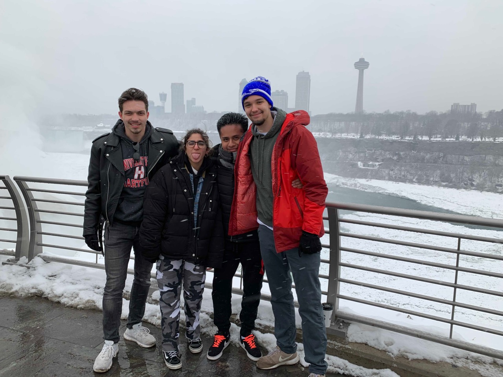

Navigation
About Me
My name is Angel Sanango, I study at University of Hartford where I'm majoring in Electronics and Computer Engineering. For the past nine years I've lived in the town of New Milford, CT, but I'm originally from Ecuador where I spent most of my childhood. Most of my hobbies include researching about cars, using dj software for music mixing, playing sports, and I play videogames. Cars are fascinating to me and my dream is to work for a racing team involved in Formula One racing. I'm also a big fan of all types of music. I come from a family who is dedicated to djing and my uncle owns nightclubs where I learned to use mixing software, and to this day I never get bored of taking my laptop out to play music whenever I want to.